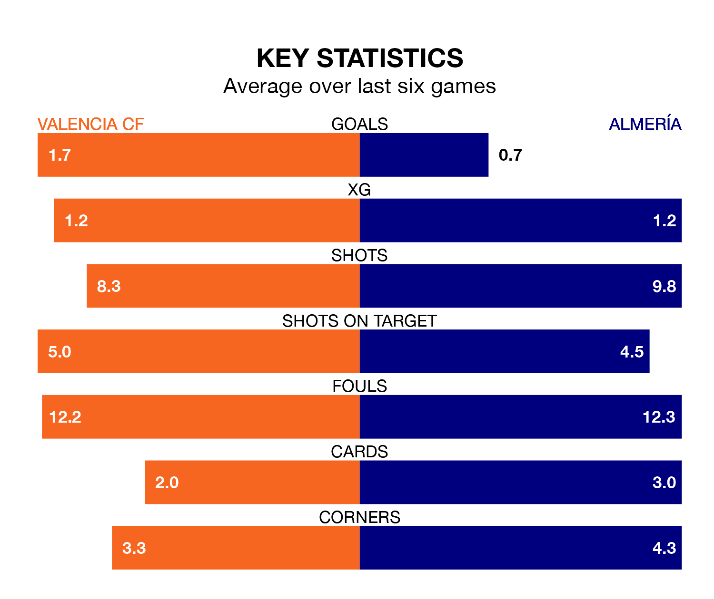

Valencia CF are heavy favourites to keep all three points at home in Saturday lunchtime's kick-off against Almería.
Valencia, who sit eighth in La Liga with 22 games played, are priced at 1.6 to seal victory at Estadio de Mestalla.
Sitting 12 places and 26 points behind them in the table, Almería are 5.0 to win with *Betting Company*, while the draw is at 3.8.
Valencia are in good form in La Liga, with four wins and a draw from their last six games.
With no wins and two draws over that period, Almería's form is much worse – they have taken two points from 18, compared to the home side's 13.
In the last 10 years, Valencia and Almería have played each other on six occasions. Valencia won two of them, Almería one, and they drew three times.
On average, Valencia scored 2.2 goals and Almería 2.0 in those matches.
Their last meeting was on September 23, when they played out a 2-2 draw.
With 21 goals in 22 games so far this season, the visitors are scoring at below the league average rate with 1.0 goals per game. And they are conceding more than average, letting in 49 goals at a rate of 2.2 per game.
Valencia are also below average scorers, with 1.2 goals per game, compared to a league average of 1.3. They have also conceded 1.2 goals per game.
In Hugo Duro, Valencia have one of the league's sharpest shooters so far this season. He has notched nine goals in 22 appearances, to sit eighth in the scoring charts.
His goal rate of one every 202 minutes is quicker than that of Sergio Arribas, Almería's top scorer with a goal every 298 minutes, and a total of five goals in 22 games.
Valencia's last match was on Sunday, a 2-0 loss against Atlético Madrid.
Almería lost 3-0 against Deportivo Alavés last time out, on January 26.
Updated: 10:03 (UTC), 30/01/24